Murk, a tired mug built from three stacked layers with a fish-hook handle, floating in dusky fog. 512 px squircle icon on ink #17152e.

904 x 256 banner: the mug, the levistack wordmark with the gold stack, and the seven-step use-levistack route with step 06 prove in gold.

A full scene (chosen), B mug only, C one-colour stamp for small or printed uses.